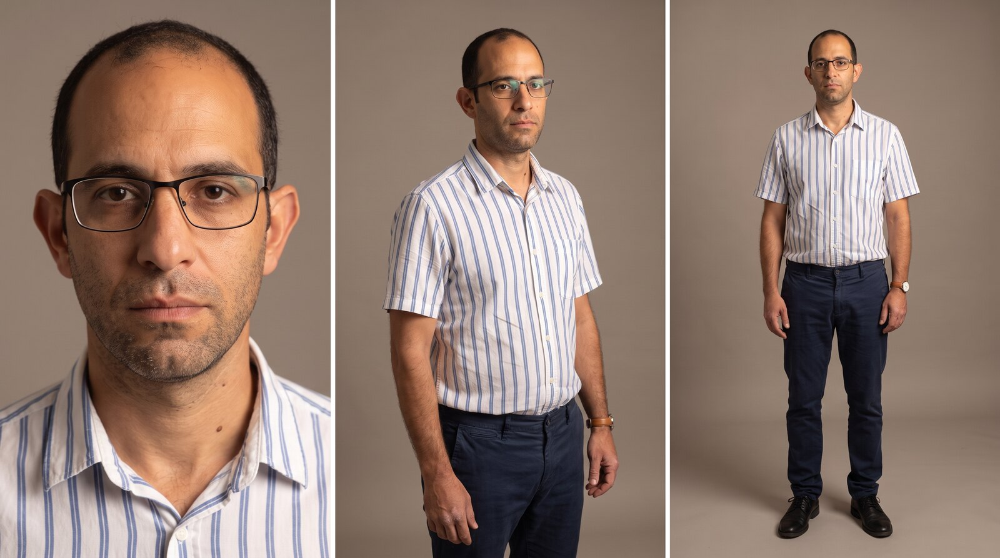
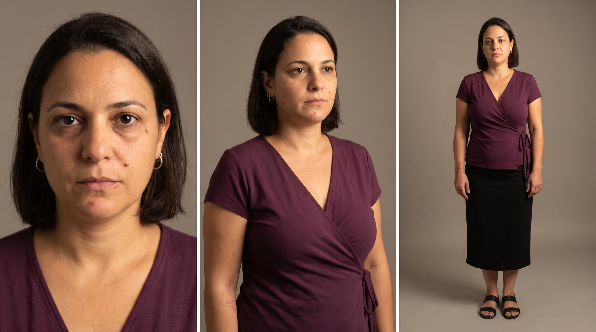
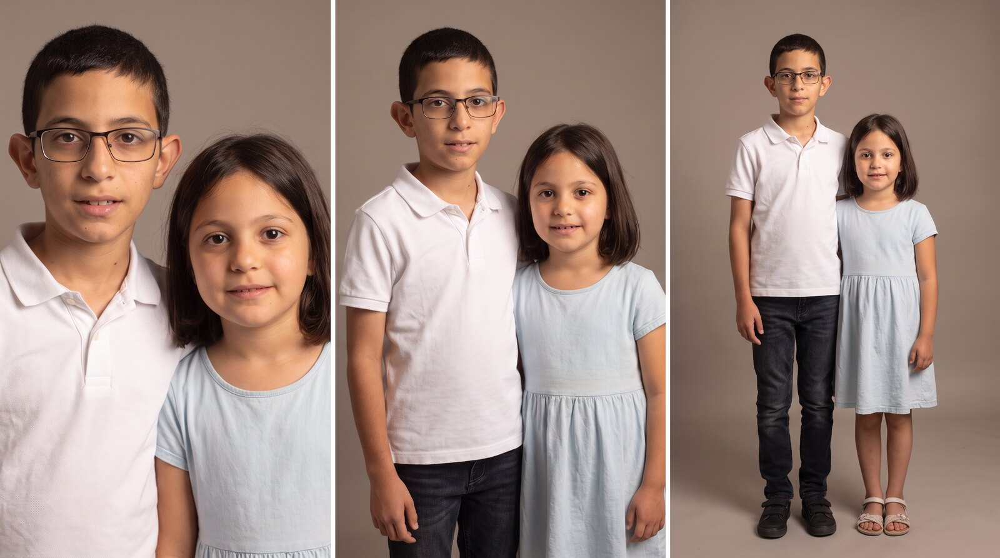
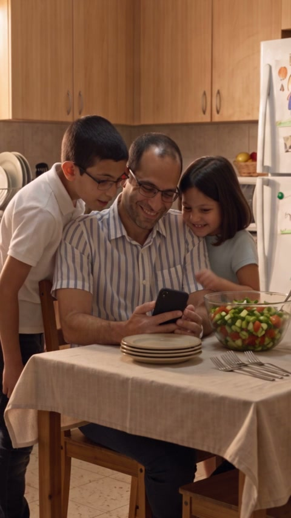
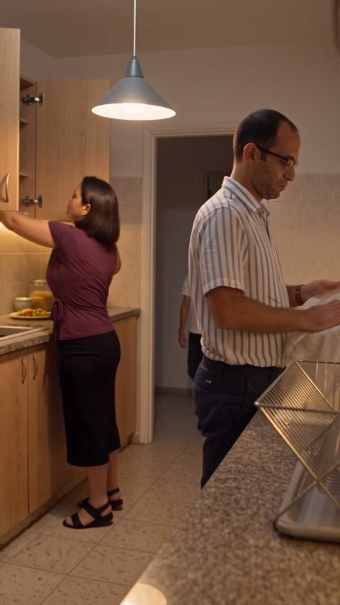
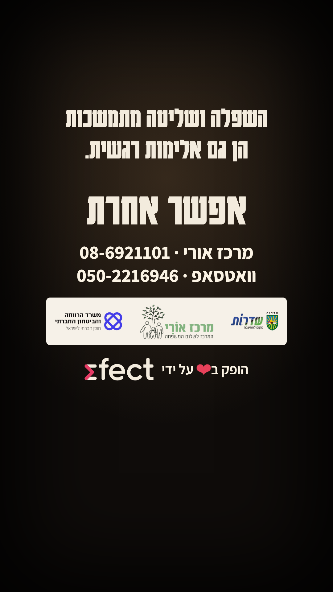

אגף הרווחה · עיריית שדרותקמפיין ליום המאבק באלימות במשפחה
בהפקת
יום רגיל בבית. האב צוחק עם הילדים מול הטלפון, והיא לוקחת לו אותו מהיד ומרחיקה אותם. בארוחת הערב הוא מספר סיפור, והיא מחקה אותו מול הילדים. במטבח היא טורקת ארון, והוא נרתע. הבן רואה.
זו גרסת עבודה באיכות נמוכה יותר. אחרי האישור שלכם הסרטון יוצא באיכות המלאה, כמו שאר הסרטונים בסדרה.
לחצו על התשובה, כתבו את השם שלכם ולחצו ״שליחת התשובות״ בתחתית הדף. התשובה מגיעה ישירות אלינו.
כל דמות מוצגת בשלוש זוויות: פנים, שלושה-רבעים וגוף מלא, בלבוש של הסרטון. ככה היא תיראה בכל השוטים.

האבבן 40 בערך, רזה, משקפיים דקים, חולצה מכופתרת בפסים.
האםבת 39 בערך, שיער כהה עד הכתפיים, חולצה בצבע שזיף.
הילדיםבן כ-10 עם משקפיים ובת קטנה ממנו.
המטבחשולחן המטבח ליד המקרר עם ציורי הילדים.
המטבחהכיור, הארונות ופתח המטבח.אותו כרטיס בכל חמשת הסרטונים: שורה שנותנת שם למה שראינו, "אפשר אחרת", הטלפונים של מרכז אורי, שלושת הלוגואים והקרדיט של Efect.

"השפלה ושליטה מתמשכות הן גם אלימות רגשית." ואז "אפשר אחרת", מרכז אורי 08-6921101 · וואטסאפ 050-2216946, שלושת הלוגואים והקרדיט של Efect.לכל שוט: מה רואים, מה שומעים, איך המצלמה מצלמת, מה האור והקומפוזיציה, ומה הצופה אמור להבין ברגע הזה. התזמונים הם הנחיית עבודה; האורך הסופי של כל סרטון נקבע בעריכה לפי הנרטיב והעברת המסר, בטווח 20–40 שניות.
כל הטקסטים נבנים בעריכה, בעברית, באזור הבטוח של אינסטגרם. הנוסחים כאן לאישורכם.
חמשת הסרטונים מופקים דרך Efect, בהובלת אוראל לוי: תסריט, בימוי, יצירת הדמויות והסצנות, עריכה, סאונד וטקסטים, עד חמישה סרטונים מוכנים לפרסום.